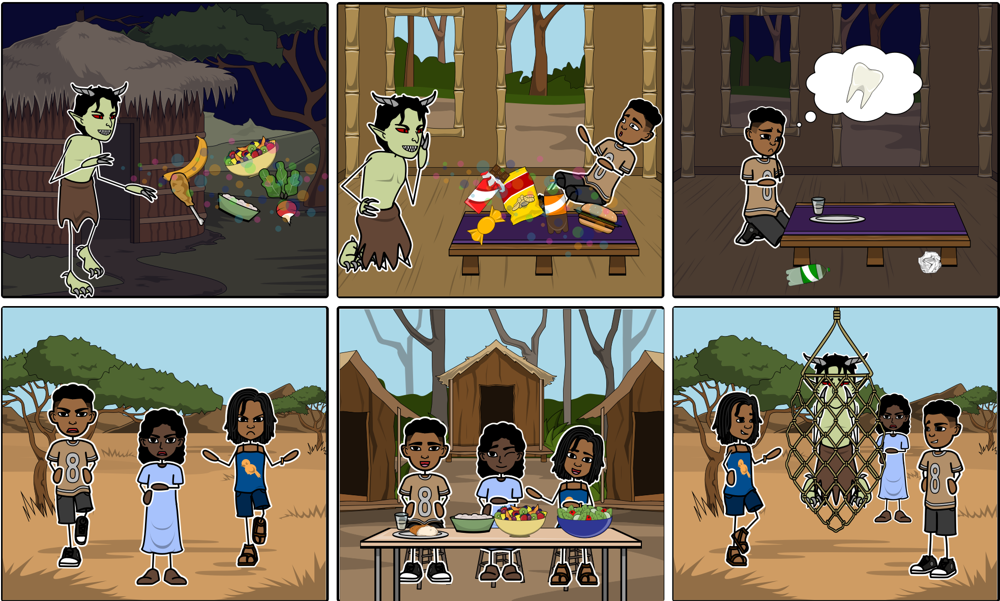

Toujo's friends
Olomuroro was a greedy monster who loved to trick kids. He went around villages while the parents were away at work, and tricked the children into giving him all their egusi soup, fufu and fresh farm vegetables. He would replace the good food with sweets and soda… The parents would come back and their children would be sick and tired, their faces would be pale and their teeth would hurt. The kids banded together and by eating their mothers cooking overtook Olomuroro and he never bothered them again.